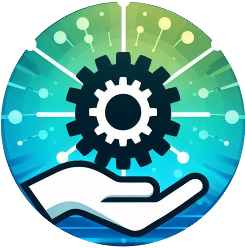

Sobre a Helptek
Transformando cada desafio em uma solução eficiente.
Nossa Missão
A Helptek existe para agilizar a solução de problemas de usuários finais, garantindo que cada
interação com o atendimento seja rápida, eficiente e sem complicações. Nossa plataforma inovadora
utiliza um sistema de histórico de soluções e filtragem para identificar problemas similares e
entregar respostas mais assertivas. Além disso, contamos com um Chatbot que aprende continuamente,
aumentando a eficiência dos atendentes da Softtek e reduzindo o tempo de resposta.
Fazemos parte do desafio 1 do Challenge da FIAP - Desenvolvimento de Assistente de Suporte Técnico com IA Generativa, onde o objetivo é
melhorar e aumentar assertividade e produtividade (agilidade) no atendimento do Service Desk e AMS nível 1 e 2, desenvolvendo
uma aplicação de assistência técnica alimentada por Inteligência Artificial Generativa ou utilizando outras técnicas, capaz de fornecer insights e soluções para os atendentes tanto do Service Desk (nível 1) quanto
do AMS (Nível 2), com base em uma análise automatizada do histórico de soluções.
Nossos Diferenciais
- Histórico de Soluções: Acesso rápido a soluções anteriores, otimizando o tempo de resposta.
- Filtragem Inteligente: Encontre soluções específicas para problemas complexos.
- Chatbot Aprimorado: Um assistente virtual que aprende com cada interação para oferecer respostas cada vez mais precisas.
- Interface em Java: Para cadastro de novas soluções no banco de dados, temos uma Interface em Java para que soluções validadas passem a aparecer no website.
Nosso Compromisso
Comprometemo-nos a melhorar continuamente a experiência de atendimento, tornando-a mais rápida e eficiente, sem sacrificar a qualidade. Nossa visão é transformar a maneira como o atendimento é feito, criando um futuro onde cada problema encontra sua solução ideal com rapidez e eficácia.
Futuras Implementações
A Helptek está constantemente evoluindo. Fique atento para novas funcionalidades e melhorias que traremos para aprimorar ainda mais a experiência do usuário e aumentar a eficiência no atendimento.
Pretendemos melhorar a eficiência de resposta do Chatbot, além da organização dos cadastros do banco de dados, trazendo
maior eficiência para busca no histórico e filtragem.
Também planejamos deixar a API do projeto que atualmente é executada manualmente, rodando externamente em algum servidor.
Atualmente, há um limite de 15 requisiçoes por minuto devido as ferramentas de IA usadas no projeto,
que também deve está nos planos de melhoras futuramente.
A aparência e intuitividade do website é levada em consideração, buscando o acesso amigável em todos dispositivos.
Cada vez mais buscamos inovações para agilizar o fluxo de trabalho dos atendentes da Softtek, atuando principalmente
nos níveis 1 e 2.
Dessa forma, conseguimos levar soluções para todos com mais eficiência e menos esforço!
Parceira exclusiva da Softtek para soluções de atendimento inovadoras.